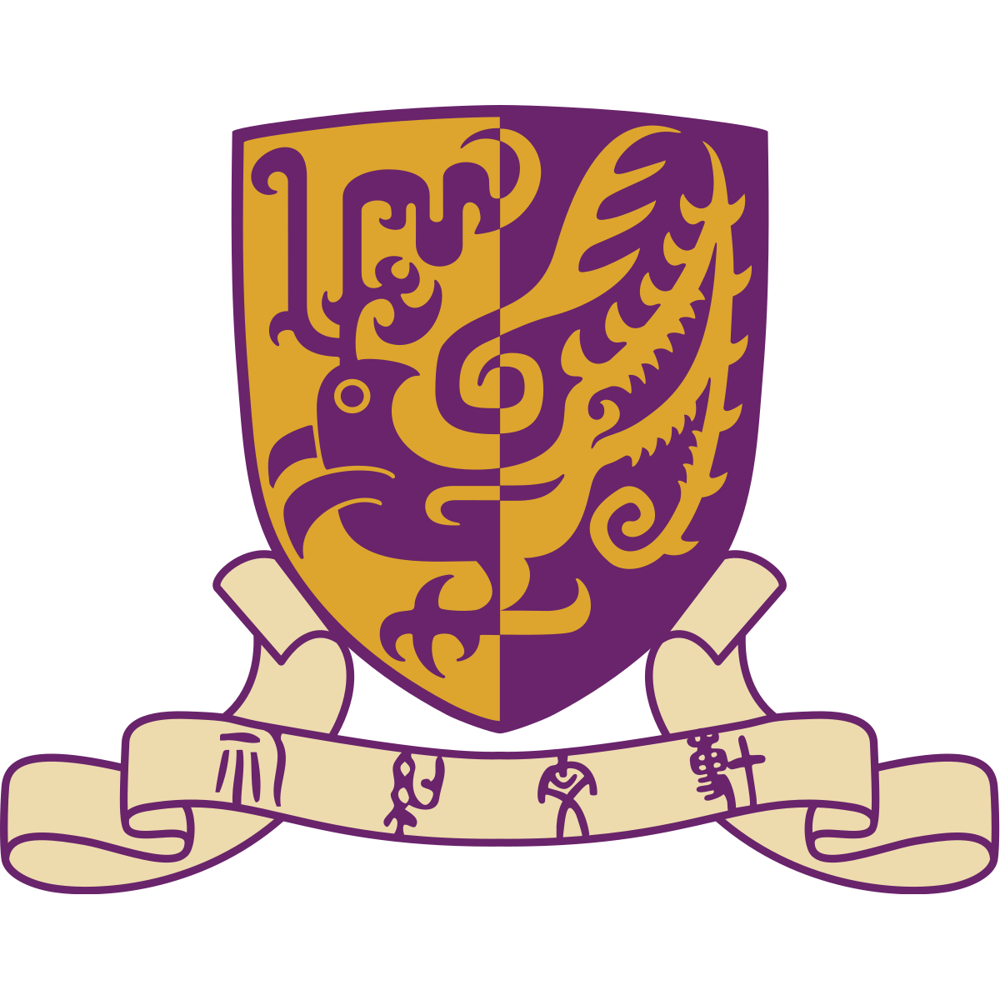
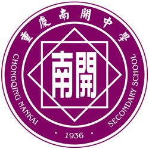
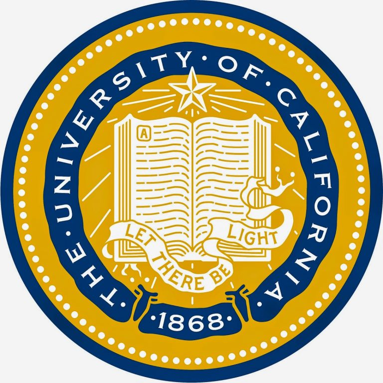
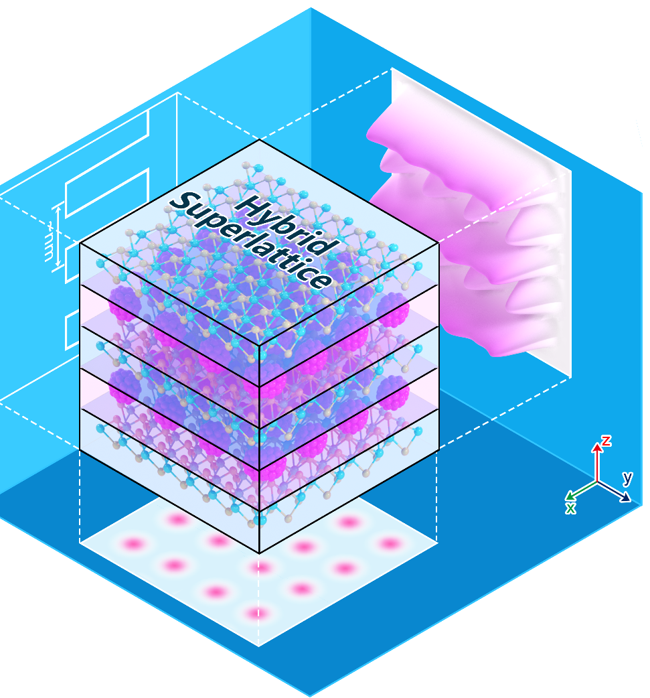
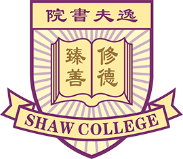

I am a Physics undergraduate (Class of 2027) at The Chinese University of Hong Kong, Shenzhen, specializing in AI for Science (AI4S) and Generative AI. I entered the university in 2023 and transferred from Business Economics to Physics in 2024. Leveraging a rigorous foundation in statistical mechanics, I bring a unique physical intuition to theoretical AI research—from developing Flow Matching algorithms that overcome critical slowing down in MCMC sampling, to optimizing LLM reasoning.
My academic journey also includes hands-on experience in 2D electronics and quantum physics, alongside visiting studies at UC Berkeley and the University of Auckland. Beyond research, I am actively engaged as an Undergraduate Course Tutor and am a multi-year recipient of the Dean's List honour and College Scholarships.
Key Highlights
Education at a Glance
B.Sc. in Physics
CUHK-Shenzhen · Class of 2027 · transferred from B.B.A. in 2024
Visiting Student
University of Auckland · Physics, CS & AI
Summer Visiting
UC Berkeley Extension · Physics & Neuroscience
Certifications
HCIA-AI (Huawei Certified ICT Associate - Artificial Intelligence)
2025Issued by Huawei Technologies Co., Ltd. (Valid through Dec 2028). Certificate No. 010102001810062372927192.
Recent Research
Guided Research on Generative AI (Diffusion & Flow Matching)
2025 – PresentCUHK-SZ · Prof. ZHOU Kai's Group
- Lattice Field Theory & MCMC Acceleration: Tackling Critical Slowing Down (CSD) in the 2D XY Model near the BKT transition by proposing generative models as proposals for Independence Metropolis-Hastings (IMH) to achieve Data-free (SPS) sampling.
- Architecture Engineering: Designed and trained a 6-layer AdaLN-Zero Diffusion Transformer (DiT) integrated with a differentiable
VorticityExtractorinductive bias to preserve topological vortex-antivortex constraints. - Riemannian Flow Matching: Resolved topological tearing caused by Euclidean ODE integration; transitioned to Angle-Space (Torus) Flow Matching, predicting scalar angular velocity (dθ/dt) to strictly preserve topological invariants.
Education

B.Sc. in Physics (Expected)
2024 – 2027The Chinese University of Hong Kong, Shenzhen
Transferred from Business Economics in 2024; currently majoring in Physics.
B.B.A. in Economics
2023 – 2024The Chinese University of Hong Kong, Shenzhen
Completed Year 1 foundation courses before transferring to the B.Sc. Physics program to pursue my passion for sciences.

High School Diploma (Liberal Arts)
2020 – 2023Chongqing Nankai Secondary School · Chongqing, China
Exchange / Visiting Program

Summer Visiting Student
2025 (Summer)University of California, Berkeley Extension · Berkeley, CA, USA
Completed coursework in physics and neuroscience; enhanced cross-cultural academic communication and independent learning skills.
Visiting Student
2026 (Spring)University of Auckland · Auckland, New Zealand
Nominated by CUHK-SZ; completed advanced coursework in Physics, Computer Science, and AI (COMPSCI 361, COMPSCI 220).
Senior Thesis / Working Paper
Solving Topological Freezing in 2D XY Model via Angle-Space Flow Matching
In ProgressB.Sc. Graduation Thesis · Advised by Prof. ZHOU Kai
Investigating the failure modes of Stochastic Path Samplers (SPS) in continuous O(2) symmetric models. Proposing a transition from Euclidean SDEs to deterministic, Torus-manifold Flow Matching to eliminate truncation-induced topological tearing (isolated vortices), aiming to restore Independence Metropolis-Hastings (IMH) acceptance rates and achieve a fully data-free generative paradigm.
Research Experience
Course Project · Group Research on Semiconductor Optical Properties
2024 (Fall)CUHK-SZ
(Group Leader) Led a team in investigating optical properties of semiconductors; conducted literature review, authored final report, and delivered class presentation.
Course Project · Group Research on Bell Test in Quantum Physics
2025 (Spring)CUHK-SZ
(Group Leader) Led a team in exploring experimental verification of Bell's theorem; delegated tasks, co-authored final report, and delivered final presentation.
Course Project · Group Research on Computational Physics (Quantum Harmonic Oscillator)
2025 (Spring)CUHK-SZ
Synthesized research data and methodologies from team members to author the final report using LaTeX.
Course Project · Group Research on Bose-Einstein Condensation
2025 (Fall)CUHK-SZ
(Group Leader) Led a team in exploring the topic of "Observation of Bose-Einstein Condensation in a Dilute Atomic Vapor"; delegated tasks, conducted literature review, co-authored presentation slides using LaTeX, and delivered final presentation.

Guided Research on Van der Waals Integration and 2D Electronics
2025 (Fall)CUHK-SZ · Prof. QIAN Qi's Lab
Fabricated and characterized high-performance MoS2 transistors using advanced van der Waals integration and dry transfer of 2D heterostructures. Successfully achieved polarity modulation (N-type to P-type) by engineering metal-semiconductor contacts, effectively overcoming traditional interface defects and reaching high device performance. Gained hands-on experience in nanofabrication and electrical characterization techniques; conducted literature review and authored a comprehensive end-of-term project report.
Remote Research Assistant
2026 (Spring)INSAIT (Institute for AI and Tech) · Bulgaria / Remote
- LLM Reasoning & Optimization: Conducting in-depth technical analysis of state-of-the-art reasoning paradigms, such as Surgical Post-Training (SPOT), focusing on how implicit regularization (the "Elastic Tether" mechanism) and minimal-edit data rectification mitigate catastrophic forgetting in Large Language Models.
- Objective Alignment: Addressing the non-convex multi-objective optimization challenge between reasoning performance gain and foundational knowledge retention.
- Academic Collaboration: Delivering weekly research syntheses and contributing to seminars under Dr. Jinjin Gu.
Guided Research on Generative AI (Diffusion & Flow Matching)
2025 – PresentCUHK-SZ · Prof. ZHOU Kai's Group
- Theoretical Foundation: Formulated the mathematical connection between SDEs and Diffusion Models, simulating 1D Double-well systems to map transition states from entropy to data manifolds.
- Lattice Field Theory & MCMC Acceleration: Tackling Critical Slowing Down (CSD) in the 2D XY Model near the BKT transition (T ≈ 0.89) by proposing generative models as proposals for Independence Metropolis-Hastings (IMH) to achieve Data-free (SPS) sampling.
- Architecture Engineering: Designed and trained a 6-layer AdaLN-Zero Diffusion Transformer (DiT) integrated with a differentiable
VorticityExtractorinductive bias to explicitly monitor and preserve topological vortex-antivortex constraints. - Riemannian Flow Matching: Identified and resolved topological tearing (divergent energy penalties) caused by Euclidean ODE integration and S¹ projection artifacts. Transitioned the paradigm to Angle-Space (Torus) Flow Matching, predicting scalar angular velocity (dθ/dt) to strictly preserve topological invariants.
- Comprehensive Physics Evaluation: Developed a robust physical benchmark suite independently evaluating absolute vortex density, energy density, spin-spin correlation decay (η exponent), and IMH acceptance rate against Wolff cluster algorithm ground truths.
Work Experience
Undergraduate Student Teaching Fellow (USTF)
2025 (Fall)CUHK-SZ School of Science and Engineering
Teaching Fellow for: CSC1005 (Intro. to Computer Engineering), CSC1001 (Intro. to Computer Science), and PHY1001 (Mechanics).
Study Abroad Student Ambassador (2026 Outbound Study Programme)
2025 – 2026CUHK-SZ Office of Academic Links (OAL) · Australia & New Zealand Group
- Served as a key liaison between students and the Office of Academic Links in daily communication, safety reminders, and emergency handling.
- Understood students' questions and needs and provided appropriate assistance and support.
- Organized various activities to enhance team members' academic and living experience during their time abroad.
- Actively participated in university-wide sharing sessions on outbound study experiences, sharing insights with fellow students.
Recognized by OAL for exemplary performance, demonstrating outstanding leadership, communication skills, creativity, and enthusiasm.
Study Abroad Instagram Ambassador
2026 (Spring)University of Auckland · Auckland, New Zealand · March – June 2026
Regularly produced and posted engaging multimedia content for the official UoA Study Abroad Instagram account, connecting students from around the world; recognized as the most prolific ambassador with the highest total likes across all posts, receiving official commendation from the Study Abroad Team for exceptional content quality and engagement.
Private Tutor
2023 – 2025Self-Employed
Tutored students in CET-4, college entrance English, and international middle school math (Big Ideas Math curriculum); customized lesson plans to improve student performance.
Teaching Assistant
2023 (Summer)New Oriental Education & Technology Group · Chongqing, China
Assisted lead instructors in English classes; supported classroom management, prepared materials, and communicated with parents about student progress.
Extracurricular Activities
CUHKSZ Physical Society
2024 – PresentManagement
Organized academic events and coordinated internal operations for the Physics Society.
CUHKSZ Economics Club
2024 – PresentCore Management · Head of Secretary Department
Managed documentation, social media content, and event logistics for the Economics Club.

CUHKSZ Shaw College
2023 – 2024Student Helper
Produced WeChat content, provided multimedia support, and assisted in organizing and managing campus events.
CUHKSZ School of Humanities and Social Sciences
2023Research Assistant
Supported research documentation through field photography and video editing; assisted professors in data organization.
IT Skills
- Programming & Scientific Computing: Python (PyTorch, NumPy, SciPy, Matplotlib), CUDA, Git, and LaTeX — applied in research and coursework (CSC1001: A grade; CSC1006: ML concepts; PHY2650: team project with full marks + bonus for excellence).
- Machine Learning & Generative AI: Diffusion models, Flow Matching, and Diffusion Transformers (DiT) for AI-for-Science applications.
- Microsoft Office: Proficient in Word, Excel, PowerPoint, Teams, and Planner for academic and collaborative tasks.
- Social Media: Experienced in content creation and engagement on Twitter (X), Instagram, Facebook, WeChat, QQ, and TikTok.
- Media Editing: Skilled in iMovie and TikTok Studio for photo and video editing.
Language Skills
- English: Full professional proficiency. TOEFL iBT Score: 100 (R:29, L:26, S:23, W:22). Oct 2025.
- Mandarin Chinese: Native proficiency.
- Cantonese: Basic conversational ability.
Certifications
HCIA-AI (Huawei Certified ICT Associate - Artificial Intelligence)
2025Issued by Huawei Technologies Co., Ltd. (Valid through Dec 2028). Certificate No. 010102001810062372927192.
Honors & Awards
Full-Tuition Scholarship
2023 – 2027CUHK-SZ
Awarded based on outstanding 2023 Gaokao score.
Dean's List
2024CUHK-SZ School of Management and Economics
Recognized for academic excellence in AY2023–2024.
Dean's List
2025CUHK-SZ School of Science and Engineering
Recognized for academic excellence in AY2024–2025.
Shaw Overcoming Adversity Award
2025CUHK-SZ Shaw College
Recognized for resilience and perseverance in overcoming personal and academic challenges.